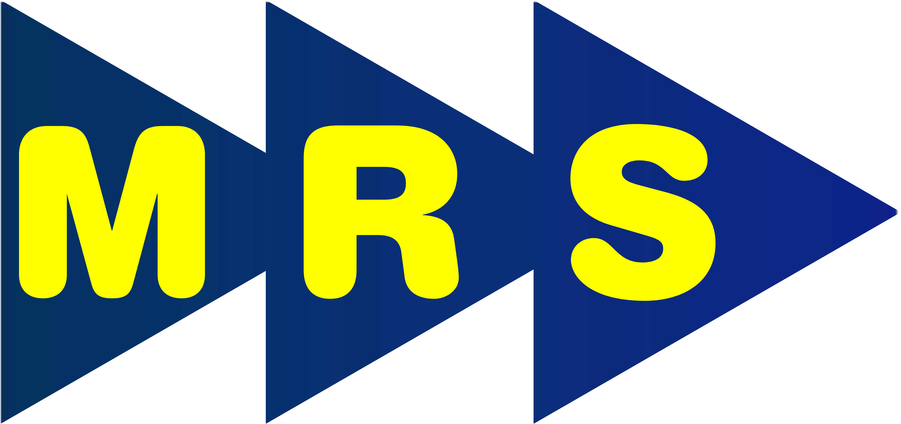

Quasar | Deslizamento - MRS
{{ loginVideoEl }}
Acesso à plataforma
E-mail *
{{ errEmail }}
Senha *
{{ errPass }}
Esqueci minha senha
Entrar
Informe seu e-mail para receber um código de acesso.
E-mail *
{{ errEmail }}
Enviar código
Digite o código enviado para
{{ maskedEmail }}
{{ errOtp }}
Voltar
Entrar
Não recebeu o código?
Reenviar código
Recuperar senha
Informe seu e-mail e enviaremos um link para você definir uma nova senha.
E-mail *
{{ errEmail }}
Cancelar
Enviar link
Termos de Uso
Política de Privacidade
{{ legalTitle }}
{{ legalMeta }}
{{ b.text }}
{{ b.text }}
{{ b.lead }}
{{ b.text }}
•
{{ b.lead }}
{{ b.text }}
{{ b.text }}
{{ b.text }}
{{ c.t }}
{{ c.t }}
Escopo: {{ legalScope }}
{{ legalRelated }}
{{ legalFooter }}
Fechar
{{ toast }}
{{ toastSub }}
Administração
{{ scopeDistLabel }}
{{ t.label }}
{{ admUserCount }}
Novo usuário
NOME
E-MAIL
PERFIL
STATUS
CRIADO EM
{{ u.name }}
{{ u.email }}
{{ u.role }}
{{ u.stLabel }}
{{ u.created }}
Editar
Gerenciar acessos
Enviar redefinição de senha
{{ u.toggleLabel }}
Buscar usuário por nome ou e-mail
{{ u.initials }}
{{ u.name }}
{{ u.email }}
Gerenciar acessos — {{ admSelName }}
IDENTIFICAÇÃO
{{ admSelName }}
{{ admSelEmail }}
MÓDULOS
{{ m.label }}
ESCOPO DE CLIENTE / DISTRIBUIDORA
{{ c.label }}
Alterações não salvas
Cancelar
Salvar acessos
Usuário
De
{{ dtLogFrom.label }}
Até
{{ dtLogTo.label }}
Status
{{ selLogStatus.label }}
Limpar
Filtrar
DATA/HORA
USUÁRIO
AÇÃO
RESULTADO
IP
{{ g.at }}
{{ g.user }}
{{ g.action }}
{{ g.result }}
{{ g.ip }}
Nenhum registro para os filtros aplicados.
Novo usuário
{{ f.label }}
{{ f.err }}
Administrador
MÓDULOS
{{ m.label }}
Campos com * são obrigatórios.
Cancelar
Criar usuário
Editar usuário
{{ f.label }}
{{ f.err }}
Administrador
MÓDULOS
{{ m.label }}
Campos com * são obrigatórios.
Cancelar
Salvar alterações
Descartar alterações?
As alterações no cadastro deste usuário não foram salvas.
Continuar editando
Descartar
Enviar redefinição de senha?
O usuário receberá um link para definir uma nova senha em {{ admResetEmail }}.
Cancelar
Enviar link
Descartar alterações?
Os acessos alterados para este usuário não foram salvos.
Continuar editando
Descartar
{{ toast }}
{{ toastSub }}

{{ scopeLabel }}
Escopo de análise
Defina o recorte exibido no mapa.
{{ m.label }}
{{ f.label }}
{{ f.valueLabel }}
{{ o.label }}
Nenhuma opção encontrada.
KM inicial
KM final
{{ kmRangeLabel }}
Desenhe uma região no mapa para definir o escopo.
Desenhar região
{{ scopeRegNote }}
{{ rg.label }}
· {{ rg.area }}
Adicionar região
Limpar
Aplicar escopo
{{ g.title }}
{{ r.label }}
{{ r.sub }}
fora do escopo
Nenhum resultado para “{{ searchQ }}”.
{{ searchMsg }}
{{ bellPulseEl }}
Alertas
{{ alertBadge }}
{{ user.initials }}
{{ clientTag }}
{{ user.initials }}
{{ user.name }}
{{ user.area }}
{{ user.email }}
CONTEXTO DO CLIENTE
{{ co.label }}
Meu perfil
Sair
Desenvolvida por
{{ r.badge }}
{{ drawerTitle }}
{{ drawerActionLabel }}
{{ g.label }}
{{ g.activeLabel }}
{{ l.label }}
{{ l.count }}
{{ l.stateLabel }}
Tentar novamente
{{ l.desc }}
Opacidade
{{ l.opacityLabel }}
CORES DE PRIORIDADE
{{ p.code }}
{{ p.label }}
Cor
{{ l.expMeta }}
FONTE DA DETECÇÃO
{{ sr.label }}
{{ sr.count }}
{{ t.label }}
{{ g.label }}
{{ g.activeLabel }}
{{ l.subHead }}
{{ l.label }}
{{ l.count }}
{{ l.stateLabel }}
Tentar novamente
{{ l.desc }}
Opacidade
{{ l.opacityLabel }}
{{ sgg.label }}
{{ sgg.label }}
{{ o.label }}
{{ sgg.label }}
{{ sg.label }}
Cor
{{ l.expMeta }}
Nova camada
Nenhuma camada adicionada
Adicione dados geoespaciais próprios para visualizar junto às camadas Quasar.
{{ u.name }}
{{ u.meta }}
{{ l.label }}
{{ l.count }}
Opacidade
{{ l.opacityLabel }}
Faixa LSI
{{ lsiLoLabel }} – {{ lsiHiLabel }}
0
10
Paleta
{{ suscPalName }}
{{ p.name }}
Pontos de risco
{{ prCount }}
Faixa LSI
{{ prlLoLabel }} – {{ prlHiLabel }}
0
10
Período
Limpar
Aplicar
Filtros alterados. Clique em Aplicar para atualizar o mapa.
{{ l.subHead }}
{{ l.label }}
{{ l.count }}
Trecho
{{ o.label }}
Regras
{{ rg.name }}
{{ rr.label }}
{{ rr.text }}
{{ l.note }}
{{ t.label }}
{{ measureHint }}
{{ geomsLabel }}
{{ measSelSummary }}
{{ s.label }} ·
{{ s.value }}
Escolha uma ferramenta para medir sobre o mapa.
{{ t.label }}
MAPA
{{ it.label }}
{{ it.sub }}
PONTOS DE RISCO
{{ it.label }}
{{ it.sub }}
ALERTAS E OCORRÊNCIAS
{{ p.label }}
{{ it.label }}
{{ it.sub }}
{{ expCountLine }}
{{ expScopeLine }}
{{ expPeriodLine }}
PERÍODO DA EXPORTAÇÃO
{{ p.label }}
Data inicial
{{ dtExpFrom.label }}
Data final
{{ dtExpTo.label }}
{{ expPerHint }}
{{ c.label }}
Formato
{{ f.label }}
{{ expALabel }}
Arquivo pronto para salvar:
{{ expAFile }}
DADOS OPERACIONAIS
{{ d.label }}
CAMADAS
{{ d.label }}
MINHAS CAMADAS
{{ d.label }}
{{ expSelLabel }}
Escopo
{{ selExpEscopo.label }}
Formato
{{ selBFormat.label }}
{{ volWarn }}
Preparando pacote…
{{ expBPctLabel }}
Arquivo pronto para salvar:
{{ expBFile }}
{{ expBLabel }}
LSI
Alto
{{ t.label }}
Baixo
{{ swipeLayerLabel }}
Mapa-base
{{ busyText }}
{{ emptyTitle }}
{{ emptyDetail }}
{{ a.label }}
{{ warnFocosText }}
Exibir focos
Clique no mapa para começar a região
{{ c.full }}
{{ l.label }}
N
S
L
O
{{ compassLabel }}
Base do mapa
{{ b.label }}
{{ b.sub }}
Salvar imagem
PNG do mapa atual
Exportar PDF
Página A4 com dados do mapa
{{ wv.label }}
{{ dg.label }}
{{ t.label }}
Referência
Climatempo
{{ wxTitle }}
· {{ wxSrcLabel }}
{{ wxMin }}
{{ wxMax }}
{{ b.label }}
{{ wxMoreLabel }}
{{ m.label }}
{{ o.label }}
Trovoadas
Radar
{{ m.label }}
{{ rb.label }}
mm/h
{{ radarTag }}
{{ radarTime }}
SATÉLITE
{{ satDay }} · {{ satTime }}
{{ rm.label }}
{{ radarTime }}
{{ rb.label }}
mm/h
Enquadrar cobertura
Classificar
Classes de declividade
{{ t.label }}
{{ r.name }}
{{ r.from }}
–
°
ou mais
Cancelar
Aplicar
{{ ov.label }}
{{ ov.nNew }}
{{ opSecLabel }}
{{ opWinLabel }}
Legenda
{{ coordText }}
{{ scaleText }}
LEGENDA
{{ legendInfo }}
Nenhuma camada ativa com legenda.
{{ sec.title }}
{{ sec.actionLabel }}
{{ it.label }}
{{ it.note }}
Carregando previsão
{{ wxEllipsis }}
Ocorrências
{{ rowCount }}
‹
{{ mrTitle }}
PREVISÃO
{{ mrBoletim }}
{{ tb.label }}
{{ fv.label }}
FONTES
{{ sc.label }}
{{ sc.bol }}
{{ mrLegTitle }}
{{ lg.label }}
Somente divergências
Nenhum trecho com divergência entre as fontes selecionadas.
Trecho · fonte
{{ w.a }}
{{ w.b }}
{{ mrTotHead }}
{{ mrTotSub }}
{{ g.n }}
{{ g.km }}
≠
{{ g.divTxt }}
{{ sr.label }}
{{ c.lbl }}
· {{ c.mm }}
{{ sr.tot }}
{{ mrCmp.segLabel }}
{{ o.label }}
{{ lg.label }}
Todos os gráficos
VARIÁVEL
{{ o.label }}
{{ ch.title }}
{{ ch.unit }}
Dado indisponível nas fontes selecionadas
{{ yt.label }}
{{ ch.tipTime }}
{{ ch.tipVar }}
{{ tr.label }}
{{ tr.val }}
{{ xt.label }}
{{ ch.naTxt }}
{{ th.title }}
{{ th.unit }}
Dado indisponível
{{ mrCmp.stTitle }}
Nenhuma estação cadastrada a até 30 km do trecho.
{{ st.name }}
{{ st.id }} · Fonte {{ st.org }}
{{ st.dist }}
{{ st.vars }}
{{ st.last }}
{{ cgTitle }}
{{ cgCount }}
Voltar à grade
{{ ly.label }}
{{ vw.label }}
Nenhuma câmera disponível no escopo atual.
Nenhuma câmera corresponde à busca.
{{ cc.id }}
{{ cc.loc }}
{{ cc.st }}
{{ cgFocus.osd }}
Sem sinal
{{ cgFocus.id }}
{{ cgFocus.line }}
{{ cgFocus.st }}
{{ cgFocus.nav }}
DETALHES
{{ r.label }}
{{ r.value }}
OUTRAS CÂMERAS
Sem sinal
{{ cc.id }}
{{ cc.loc }}
{{ cc.st }}
Nenhuma câmera disponível no escopo atual.
{{ c.osd }}
Sem sinal
{{ c.id }}
{{ c.loc }}
{{ c.st }}
Trocar câmera
{{ o.label }}
{{ o.label }}
ATUALIZAÇÃO DOS DADOS
{{ u.name }}
Última atualização ·
{{ u.last }}
Próxima atualização ·
{{ u.next }}
Pontos de risco
{{ prListSummary }}
Planilha
Nenhum ponto carregado. Defina a faixa LSI e o período em Deslizamento › Pontos de risco e clique em Aplicar.
Abrir filtros
{{ p.id }}
{{ p.where }}
{{ p.lsi }}
Lista
{{ rowCount }}
Detalhe
{{ detIdShort }}
{{ occfLabel }}
Ordenar:
{{ selSort.label }}
PRIORIDADE
{{ c.label }}
TIPO DE ATIVO
{{ kindBoxLabel }}
{{ k.label }}
PROXIMIDADE AO ATIVO
{{ selProx.label }}
Até
km
ATIVO ESPECÍFICO
{{ a.label }}
Nenhum ativo corresponde à busca.
Refinam apenas as ocorrências dentro do escopo atual.
{{ c.label }}
×
Limpar
Nenhuma ocorrência no recorte
{{ emptyDetail }}
{{ r.id }}
{{ r.critFull }}
{{ r.asset }}
{{ r.meta }}
{{ det.id }}
{{ det.critFull }}
{{ det.status }}
{{ det.assetName }}
{{ det.assetKind }}
{{ det.sumLine }}
Centralizar
Street View
Satélite
{{ b.title }}
{{ b.title }}
{{ f.label }}
{{ f.value }}
{{ ln.t }}
EVIDÊNCIA
Nenhum comentário ou anexo nesta ocorrência.
{{ e.initials }}
{{ e.author }}
{{ e.metaLine }}
{{ e.text }}
{{ e.fileName }}
{{ e.fileSize }} · Clique para ampliar
{{ e.fileName }}
{{ e.fileSize }}
Salvar comentário
Anexar evidência
Central de alertas
{{ alertSummary }}
Copiar lista
Exportar CSV
×
{{ t.label }}
Nenhum alerta gerado no período monitorado.
Nenhum alerta ou bandeira novo aguardando reconhecimento.
Nenhum alerta ativo no escopo.
{{ ca.title }}
NOVO
{{ ca.place }}
{{ ca.mm }}
{{ ca.ago }}
{{ ca.id }}
Nenhum trecho com bandeira ativa no escopo.
{{ cb.title }}
NOVO
{{ cb.place }}
{{ cb.ago }}
{{ cb.key }}
{{ cb.id }}
{{ cenBdFoot }}
OPERACIONAIS · BANDEIRAS
Nenhuma bandeira operacional ativa no escopo.
{{ b.state }}
{{ b.place }}
{{ b.agoState }}
{{ ac.label }}
{{ ac.value }} mm
{{ alertPrHead }}
Nenhum ponto de risco no escopo.
{{ pc.id }}
{{ pc.where }}
{{ pc.lsi }}
LSI · últimos 30 dias
{{ pc.trend }}
{{ pc.upd }}
{{ a.id }}
{{ a.critFull }}
{{ a.asset }}
{{ a.body }}
{{ a.at }}
Meu perfil
{{ user.initials }}
{{ user.name }}
{{ user.area }}
Editar foto
Escolha uma imagem do seu computador para recortar.
Arraste a imagem para reposicionar.
Aproximação
Escolher dos arquivos
{{ user.initials }}
Como vai aparecer no cabeçalho.
Cancelar
Salvar foto
IDENTIFICAÇÃO
Nome
{{ user.name }}
Área / cargo
{{ user.area }}
E-mail
{{ user.email }}
Telefone
{{ user.phone }}
ACESSOS
{{ m.label }}
{{ m.state }}
ALTERAR SENHA
Alterações não salvas
{{ p.label }}
{{ p.label }}
{{ pwMsg }}
Cancelar
Salvar alterações
Descartar alterações?
Os campos de senha preenchidos serão perdidos.
Continuar editando
Descartar
{{ evidDelTitle }}
{{ evidDelSub }}
Cancelar
Excluir
{{ ulMenuName }}
Renomear
Editar estilo
Remover
{{ lbName }}
{{ lbMeta }}
Salvar em Minhas camadas
Nome
Cor
Símbolo do ponto
{{ svOriginLine }}
Cancelar
Salvar em Minhas camadas
Nova camada
Nome da camada *
Descrição
Arquivo geoespacial
*
Selecionar arquivo
Formatos aceitos: .geojson e .json — arquivos de até 1 GB.
Para arquivos maiores, solicite a inclusão pela equipe Quasar.
Solicitar inclusão
{{ nlFileName }}
{{ nlFileMsg }}
Cor
Cor personalizada
{{ nlColor }}
Pictograma
{{ nlPictoSection }}
Nenhum pictograma encontrado.
Limpar busca
{{ nlPictoHelp }}
Geometria detectada
{{ nlGeomLabel }}
Pré-visualização
{{ nlPreviewName }}
{{ nlPreviewMeta }}
Cancelar
Adicionar camada
Editar estilo
Pictograma
Cor
Cancelar
Salvar estilo
Remover camada?
Essa ação remove a camada desta visualização.
Cancelar
Remover
Histórico e relatórios
Escopo atual: {{ repScope }}
{{ t.label }}
Período
{{ q.label }}
{{ repFiltLabel }}
{{ fc.label }}
{{ repCsvLabel }}
Copiar lista
Exportar CSV
{{ q.label }}
{{ o.label }}
{{ o.label }}
{{ o.label }}
{{ repSummary }}
{{ repNote }}
{{ h.v }}
{{ repEmptyText }}
{{ pv }}
{{ lv }}
{{ sb }}
{{ b.title }}
{{ b.main }}
{{ b.sub }}
{{ ac.label }}
{{ ac.value }}
Regra atingida
{{ b.ruleTxt }}
DADOS TÉCNICOS
{{ d.label }}
{{ d.value }}
{{ d.label }}
{{ d.value }}
Ver no mapa
Ação operacional
Ver histórico do evento
Análises
Histórico e relatórios · escopo atual: {{ anScopeLine }}
{{ t.label }}
Buscar por ID, ativo, município ou texto
Período
{{ hp.label }}
{{ selHqFrom.label }}
–
{{ selHqTo.label }}
Filtros
{{ hqFiltCount }}
Filtros
Conjunto elétrico
{{ selHqConj.label }}
Município
{{ selHqMun.label }}
Tipo de ativo
{{ selHqKind.label }}
Prioridade
{{ p.label }}
Distância ao ativo mais próximo
{{ selHqProx.label }}
até
km
Limpar filtros
{{ hqFiltCta }}
{{ t.label }}
{{ c.label }}
{{ hqCountLabel }}
Limpar busca
ID
DETECÇÃO
LOCAL
ATIVO RELACIONADO
PRIORIDADE
ÚLTIMA ATIVIDADE
INTERAÇÕES
{{ r.id }}
{{ r.at }}
{{ r.place }}
{{ r.asset }}
{{ r.distLabel }}
{{ r.critLabel }}
{{ r.last }}
{{ r.comments }}
{{ r.files }}
Nenhuma ocorrência histórica para esta busca.
Clique em uma linha para centralizar a ocorrência no mapa e abrir o detalhe. Comentários e anexos preservam autoria e horário de registro.
Escopo herdado do mapa
{{ cmpScope }}
Período
{{ selCmpFrom.label }}
–
{{ selCmpTo.label }}
{{ c.label }}
{{ c.value }}
{{ c.sub }}
{{ c.delta }}
Evolução no período
Período analisado
{{ d.label }}
Distribuição por prioridade
{{ p.label }}
{{ p.pair }}
Detalhamento
TIPO DE ATIVO RELACIONADO
OCORRÊNCIAS
{{ k.label }}
{{ k.a }}
Sem ocorrências no período selecionado.
MUNICÍPIO
OCORRÊNCIAS
{{ k.label }}
{{ k.a }}
Sem dado municipal no período selecionado.
{{ cmpGenLabel }}
{{ openReportId }} · Relatório operacional
Snapshot congelado
{{ m.label }}
{{ m.value }}
{{ k.label }}
{{ k.value }}
{{ k.sub }}
{{ orChartTitle }}
A
B
{{ d.label }}
{{ b.title }}
{{ r.label }}
{{ r.pair }}
{{ r.delta }}
Sem registros nos dois períodos.
Baixar PDF
Exportar CSV
Voltar à lista
RELATÓRIO
ESCOPO
PERÍODO
AUTOR
GERADO EM
AÇÕES
{{ r.id }}
{{ r.scope }}
{{ r.aLabel }}
{{ r.author }}
{{ r.at }}
Nenhum relatório gerado. Use Comparar períodos para criar o primeiro.
Sem permissão para este módulo
O módulo
Deslizamento
não está contratado para {{ scopeDistLabel }}. Solicite liberação à Quasar para incluí-lo no seu escopo.
Entendi
Ver permissões
{{ taTitle }}
{{ taRangeLabel }}
{{ taCountLabel }}
{{ updatedLabel }}
{{ p.label }}
Expandir
{{ suscCalMonthLabel }}
{{ w.label }}
{{ d.label }}
Somente as datas com dado histórico disponível podem ser selecionadas.
Período de Alertas e Bandeiras
De
Até
{{ evErr }}
Estado atual
Aplicar
{{ cpMonthLabel }}
{{ w.label }}
{{ d.label }}
{{ cpFromDay }}
{{ tpkCpFrom.label }}
→
{{ cpToDay }}
{{ tpkCpTo.label }}
{{ cpHint }}
Reiniciar
{{ taTitle }}
{{ tlFromDay }}
{{ tpkTlFrom.label }}
→
{{ tlToDay }}
{{ tpkTlTo.label }}
{{ taRangeLabel }}
{{ taCountLabel }}
{{ updatedLabel }}
{{ p.label }}
Recolher
{{ t.label }}
Ocorrências
Cicatrizes
{{ tipText }}
{{ toast }}
{{ toastSub }}
{{ focoMenuTitle }}
{{ focoMenuLL }}
Copiar latitude e longitude
{{ ctxKindLabel }}
{{ ctxTitle }}
{{ ctxSub }}
{{ ctxSub2 }}
{{ ctxBadge }}
{{ ctxExpandLabel }}
{{ chartZoomLabel }}
{{ v.label }}
{{ pv.label }}
{{ pv.value }}
De
{{ metFromSel.label }}
Até
{{ metToSel.label }}
Granularidade
{{ g.label }}
Direção do vento
{{ metWindSummary }}
{{ wv.label }}
Direção do vento
{{ roseHovOut.when }}
{{ roseHovOut.val }}
{{ r.label }}
{{ l.label }}
VELOCIDADE (km/h)
{{ b.label }}
{{ rosePredom }}
{{ roseMean }}
{{ roseVec }} · {{ roseCalm }} · {{ roseSamples }}
Fonte de referência
{{ metFcRefLine }}
· mapa e Risco por trecho
MODELOS COMPARADOS NO GRÁFICO
{{ fm.label }}
{{ fm.tag }}
{{ metLatestLine }}
{{ metChartTitle }}
{{ metUnit }}
{{ ft.label }}
Horário
Precipitação
Temperatura
Vento
Probabilidade
{{ fr.when }}
{{ fr.prec }}
{{ fr.temp }}
{{ fr.wind }}
{{ fr.prob }}
Fonte de referência Climatempo · intervalos de 6 h · visibilidade não fornecida pela fonte nesta integração.
{{ metHov.when }}
{{ metHov.val }}
{{ hm.val }}
{{ metHi }}
{{ metLo }}
{{ metAct.label }}
{{ x.label }}
{{ metGranLine }}
{{ metNote }}
{{ metFoot }}
Detalhes da estação
{{ r.label }}
{{ r.value }}
Detalhes da previsão
{{ pv.label }}
{{ pv.value }}
{{ motLiveLabel }}
{{ r.label }}
{{ r.value }}
DETALHES
{{ r.label }}
{{ r.value }}
Voltar ao resumo
{{ segPage.title }}
{{ segPage.sub }}
{{ segPage.emptyTxt }}
{{ pt.t }}
{{ pt.s }}
{{ it }}
CARACTERÍSTICAS DO TRECHO
{{ segPage.carT }}
{{ segPage.carD }}
SITUAÇÃO DO TRECHO
{{ segPage.sitLabel }}
{{ r.label }}
{{ r.value }}
{{ segPage.sitNote }}
REGRAS E REFERÊNCIA
{{ rr.label }}
{{ rr.value }}
{{ segHero.big }}
{{ segHero.unit }}
{{ segHero.pill }}
{{ segAckBtnLabel }}
Reconhecido
{{ segHero.ackWho }}
Regra atingida
{{ segRule }}
{{ segAccMain.value }}
em {{ segAccMain.label }}
{{ segAccMore }}
{{ ac.label }}
{{ ac.value }}
Regra atingida
{{ segRule }}
{{ segRule }}
Reconhecido
{{ segHero.ackWho }}
{{ tm.label }}
{{ tm.value }}
{{ segUpd }}
{{ rl.value }}
{{ pv }}
AÇÃO OPERACIONAL
Registrar ação
{{ o.label }}
KM inicial
KM final
Registro da decisão operacional tomada pela equipe responsável. A plataforma não interdita o trecho.
{{ segActErr }}
Cancelar
Salvar
{{ r.label }}
{{ r.value }}
{{ segOp.btn }}
HISTÓRICO DO EVENTO
{{ segCycleN }}
{{ cy.when }}
{{ cy.txt }}
{{ segHistMoreLabel }}
DETALHES
{{ r.label }}
{{ r.value }}
BANDEIRA PREVISTA
{{ lg.label }}
Nenhum trecho do escopo com possibilidade de bandeira prevista.
Trecho
{{ d.label }}
{{ r.label }}
—
{{ riskMore }}
{{ riskSelT }}
{{ riskSelSub }}
{{ rd.day }}
{{ rd.mm }} · {{ rd.acc }}
{{ rd.st }}
Arraste para girar
Sem sinal
{{ camOsd }}
N
S
L
O
Avançar
Orientação · {{ stvHeadingLabel }} {{ stvCardinal }}
{{ camLine }}
{{ camNavLabel }}
DETALHES
{{ r.label }}
{{ r.value }}
Período das imagens
Escolha o intervalo em que deseja buscar cenas de satélite.
Data inicial
→
Data final
{{ satFromSel.label }}
→
{{ satToSel.label }}
Nenhuma cena disponível neste período. Amplie as datas e busque novamente.
{{ satCountLine }}
{{ satPrevLine }}
{{ c.tag }}
{{ c.date }}
{{ c.cloud }}
Comparar cenas
{{ satCmpHint }}
Fonte ·
{{ satSource }}
{{ hr.label }}
{{ hr.value }}
RECORRÊNCIA E CONTEXTO
{{ rl.label }}
Evento encerrado, exibido para contexto. Prioridade e status não podem ser alterados.
{{ vc.label }}
Precipitação diária
mm
{{ plvChart.hovWhen }}
{{ plvChart.hovVal }}
{{ zt.label }}
{{ plvChart.hi }}
0
{{ plvChart.xFrom }}
{{ plvChart.xTo }}
{{ plvAccLabel }}
{{ ac.label }}
{{ ac.value }}
Detalhes da estação
{{ r.label }}
{{ r.value }}
{{ t.label }}
{{ r.label }}
{{ r.value }}
{{ r.value }}
COMENTÁRIOS
Nenhum comentário
{{ cm.initials }}
{{ cm.author }}
{{ cm.meta }}
{{ cm.text }}
{{ prCmtAuthor }}
Salvar comentário
Cancelar
Adicionar comentário
{{ t.label }}
{{ prPeriodLabel }}
{{ c.title }}
{{ c.unit }}
{{ c.hovWhen }}
{{ c.hovVal }}
{{ zt.label }}
Sem histórico de LSI para o período.
{{ c.hi }}
{{ c.hi2 }}
{{ c.lo }}
{{ c.xFrom }}
{{ k.label }}
{{ c.xTo }}
{{ prAccLabel }}
{{ ac.label }}
{{ ac.value }}
{{ t.label }}
Os índices do LSI não estão disponíveis para este ponto.
{{ c.title }}
{{ c.unit }}
{{ c.hovWhen }}
{{ c.hovVal }}
{{ zt.label }}
{{ c.hi }}
{{ c.lo }}
{{ c.xFrom }}
{{ k.label }}
{{ c.xTo }}
{{ r.label }}
{{ r.value }}
Antes e depois da queimada
Ampliar
Evolução mensal da área impactada
ha
{{ scarHi }}
{{ x.label }}
{{ sensTitle }}
{{ sensSub }}
Exportar CSV
{{ sensZoomLabel }}
{{ t.label }}
SENSORES
{{ c.label }}
{{ c.code }}
{{ r.label }}
{{ r.value }}
{{ v.label }}
{{ p.label }}
{{ sensChTitle }}
{{ sensChUnit }}
{{ sensReadWhen }}
{{ sensReadVal }}
{{ y.label }}
{{ x.label }}
{{ sensLevelLabel }}
Terreno · 0 m
{{ sensDepthMax }}
{{ sensLevelWhen }}
{{ sensLevelLabel }}
Profundidade do nível d’água em relação ao terreno
Mais raso · 12 meses
{{ sensLevelMin }}
Mais profundo · 12 meses
{{ sensLevelMax }}
{{ cmpTitle }}
Arraste o divisor para revelar uma cena sobre a outra.
{{ cmpSub }}
{{ ch.label }}
{{ cmpRowA.label }}
{{ cmpRowA.date }} · {{ cmpRowA.cloud }}
{{ cmpRowA.btn }}
{{ cmpRowB.label }}
{{ cmpRowB.date }} · {{ cmpRowB.cloud }}
{{ cmpRowB.btn }}
{{ cmpStripHint }}
{{ c.tag }}
{{ c.label }}
{{ c.cloud }}
{{ sfTitle }}
Cadastre a geometria e os dados do laudo de origem.
{{ sfSub }}
Arquivo da cicatriz
*
{{ sfFile }}
GeoJSON ou KML
Selecionar
{{ sfPolyLine }}
Data do evento
*
{{ sfDate.label }}
Horário aproximado do evento
{{ sfTime.label }}
Área impactada
{{ sfAreaCalc }}
calculada a partir da geometria
Laudo de referência
Mês de referência
*
{{ sfDate.label }}
Área ainda impactada (ha)
*
Área recuperada/recomposta (ha)
Opcional, quando informada pelo processamento externo.
Recuperação (%)
{{ sfPctLabel }}
área recuperada ÷ área inicial
Imagens de satélite
Adicionar imagens
Observação · opcional
{{ sfErr }}
Cancelar
{{ sfSaveLabel }}
{{ dpkMonth }}
{{ w.label }}
{{ d.label }}
Hora
{{ tpkDpk.label }}
Hoje
HORA
{{ tpkLabel }}
{{ h.label }}
{{ m.label }}
horas
minutos
Confirmar
{{ critPickTitle }}
Restaurar cor padrão
{{ it.label }}